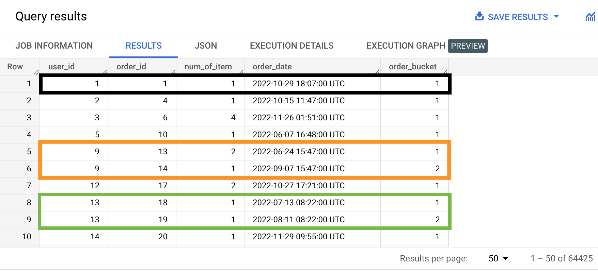
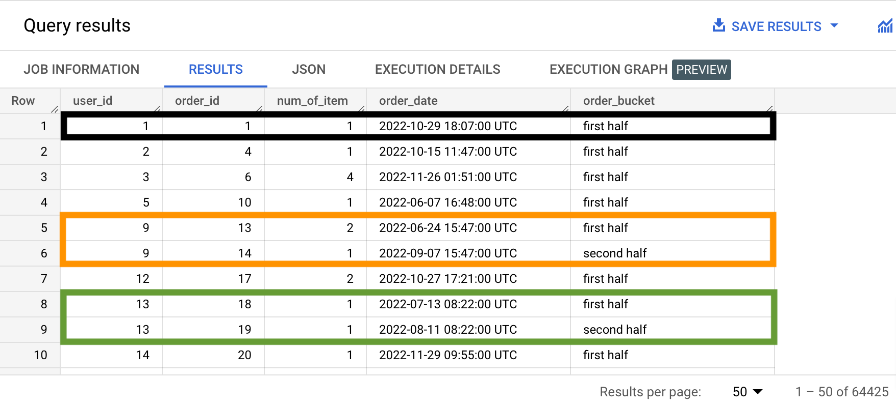
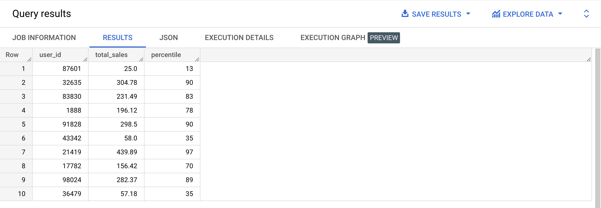
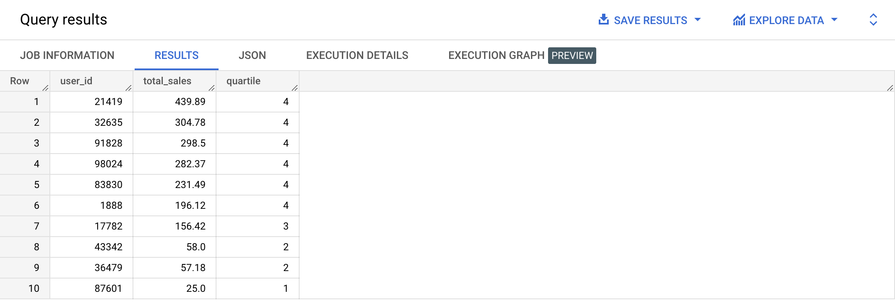
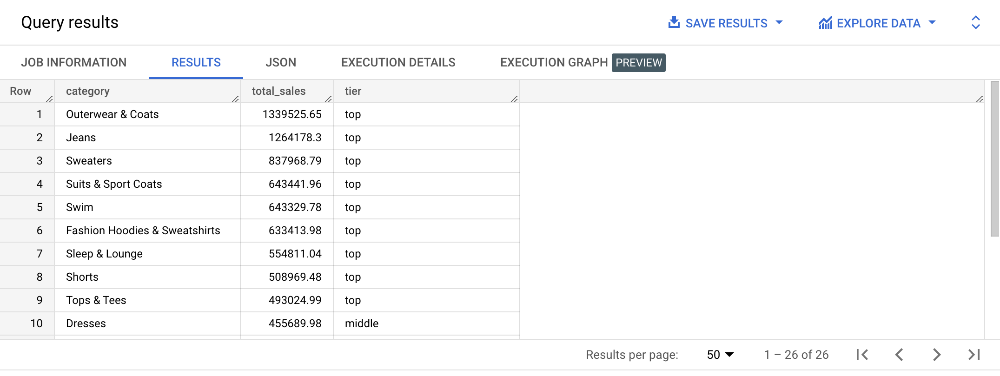

NTILE is used to create roughly equal buckets in each window. It takes one parameter: the number buckets we want to have per window.
Depending on that number, the buckets will all have the same size, or one bucket among the others will have 1 item more. For example:
Imagine we want to create student project groups in different classes, with each group having three students, and being based on the subscription date of each student. We would write something like this:
SELECT class_name,
student_name,
signup_date,
NTILE(3) OVER(PARTITION BY class_name ORDER BY signup_date ASC)
FROM classes_and_students
ORDER BY class_name ASC;
Type the query below in the BigQuery console and run it. Don't copy paste. 😉
SELECT user_id,
order_id,
num_of_item,
created_at AS order_date,
NTILE(2) OVER(PARTITION BY user_id ORDER BY created_at ASC) AS order_bucket
FROM bigquery-public-data.thelook_ecommerce.orders
WHERE FORMAT_DATE('%Y', created_at) = '2022'
ORDER BY user_id ASC;
Example results:

Type the query below in the BigQuery console and run it. Don't copy paste. 😉
SELECT user_id,
order_id,
num_of_item,
created_at AS order_date,
CASE
WHEN NTILE(2) OVER(PARTITION BY user_id ORDER BY created_at ASC) = 1 THEN 'first half'
ELSE 'second half'
END AS order_bucket
FROM bigquery-public-data.thelook_ecommerce.orders
WHERE FORMAT_DATE('%Y', created_at) = '2022'
ORDER BY user_id ASC;
Example results:

{% include practice_problems_intructions.html %}bigquery-public-data.thelook_ecommerce.order_items
Write a query that will display 10 random customers along with their percentile in terms of spend. As a reminder, in you are in the 90th percentile (percentile is 0.9), it means that you are in the top 10%.

WITH user_sales AS
( SELECT user_id,
SUM(sale_price) AS total_sales
FROM bigquery-public-data.thelook_ecommerce.order_items
GROUP BY user_id
),
user_sales_percentile AS
( SELECT user_id,
ROUND(total_sales, 2) AS total_sales,
NTILE(100) OVER(ORDER BY total_sales ASC) AS percentile
FROM user_sales
)
SELECT *
FROM user_sales_percentile
ORDER BY RAND()
LIMIT 10;
bigquery-public-data.thelook_ecommerce.order_items

WITH user_sales AS
( SELECT user_id,
SUM(sale_price) AS total_sales
FROM bigquery-public-data.thelook_ecommerce.order_items
GROUP BY user_id
),
user_sales_quartile AS
( SELECT user_id,
ROUND(total_sales, 2) AS total_sales,
NTILE(4) OVER(ORDER BY total_sales ASC) AS quartile
FROM user_sales
)
SELECT *
FROM user_sales_quartile
WHERE user_id IN (87601, 32635, 83830, 1888, 91828, 43342, 21419, 17782, 98024, 36479)
ORDER BY total_sales DESC;
bigquery-public-data.thelook_ecommerce.products
bigquery-public-data.thelook_ecommerce.order_items

WITH product_sales AS
( SELECT category,
SUM(sale_price) AS total_sales
FROM bigquery-public-data.thelook_ecommerce.products products
INNER JOIN bigquery-public-data.thelook_ecommerce.order_items order_items
ON products.id = order_items.product_id
GROUP BY category
),
product_sales_tiers AS
( SELECT category,
total_sales,
NTILE(3) OVER (ORDER BY total_sales DESC) AS tier
FROM product_sales
)
SELECT category,
ROUND(total_sales, 2) AS total_sales,
CASE
WHEN tier = 1 THEN 'top'
WHEN tier = 2 THEN 'middle'
WHEN tier = 3 THEN 'bottom'
END AS tier
FROM product_sales_tiers
ORDER BY total_sales DESC;